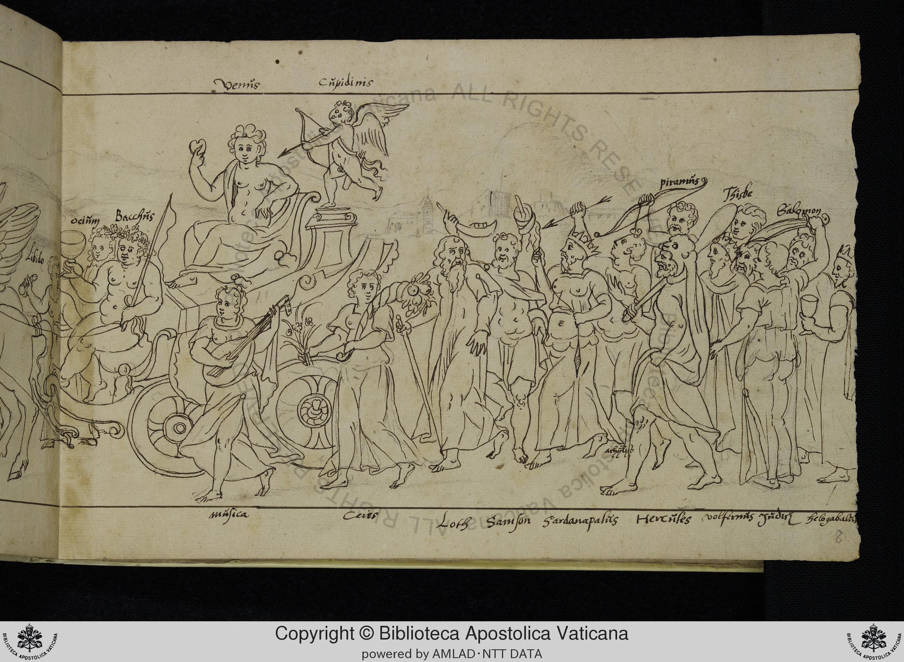

Folio f008r
The central allegory appears to be the Triumph of Venus/Love and Bacchus/Pleasure. The chariot is pulled by what appear to be horses (though the drawing is somewhat schematic). Venus sits on the chariot, holding an apple. Cupid flies above her, aiming his bow. Bacchus, holding a flag and a cup, is also on the chariot.
Labeled Figures
- "Venus" Venus Goddess of love, seated on the chariot, holding an apple.
- "Cupidims" Cupid Winged god of love, flying above the chariot, aiming his bow.
- "Bacchus" Bacchus God of wine and revelry, seated on the chariot, holding a flag and a cup.
- "ociñm" Otium Leisure/Idleness, standing next to Bacchus, holding a cup.
- "musica" Music Female figure playing a lute, walking alongside the chariot.
- "Ceies" Ceres Goddess of agriculture, walking alongside the chariot, holding flowers.
- "Samson" Samson Biblical figure, walking in the procession.
- "Sardanapalis" Sardanapalus Legendary Assyrian king known for his decadence, walking in the procession.
- "Hercülés" Hercules Roman hero, walking in the procession.
- "volfirmas" Holofernes Assyrian general, walking in the procession.
- "Juden" Judith Biblical figure, walking in the procession.
- "Belagabalie" Heliogabalus Roman emperor known for his decadence, walking in the procession.
- "piramńs" Pyramus Character from Ovid's Metamorphoses, walking in the procession, holding a bow.
- "Thisbe" Thisbe Character from Ovid's Metamorphoses, walking in the procession.
- "Balamon" Solomon Biblical king, walking in the procession.
Significance
This drawing clearly belongs to the tradition of Petrarchan Triumphs. The triumph of Venus/Love is a common theme in such cycles. The inclusion of Bacchus suggests a focus on sensual pleasure and indulgence. The presence of figures like Samson, Sardanapalus, Holofernes, and Heliogabalus suggests a moralizing element, highlighting the potential dangers and consequences of unchecked desire and power. The inclusion of Pyramus and Thisbe, characters from Ovid's Metamorphoses, further emphasizes the theme of love and its tragic consequences. The presence of Ceres suggests the bounty of the earth and the pleasures of the senses. The inclusion of Judith is interesting, as she is often associated with chastity and virtue, which could be a counterpoint to the other figures. This manuscript page provides valuable insight into the visual culture and moral concerns of the 16th century. The combination of classical mythology, biblical figures, and historical characters is typical of Renaissance allegorical art. The relatively crude drawing style suggests that this manuscript may have been produced for a less wealthy patron or for personal use. The manuscript's lack of previous study makes this documentation particularly significant.